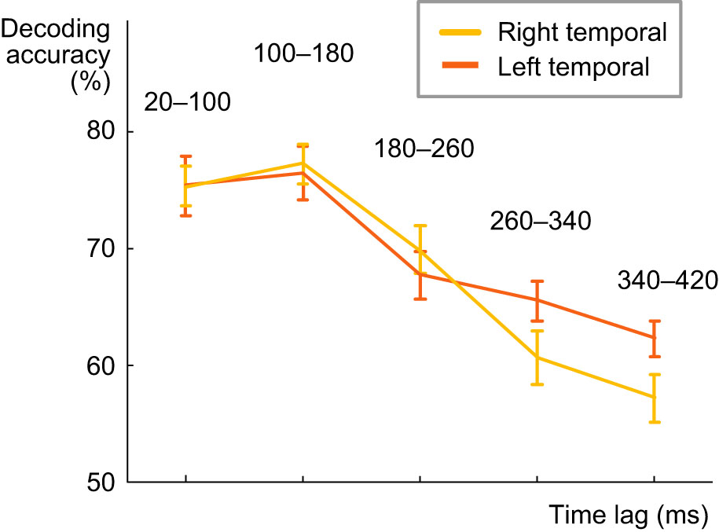
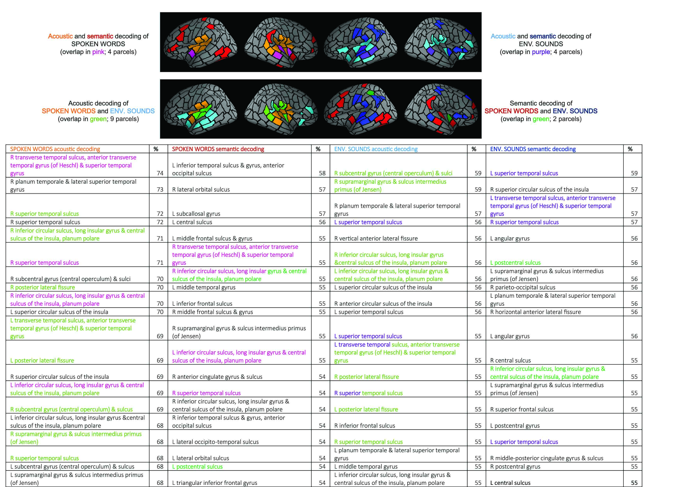
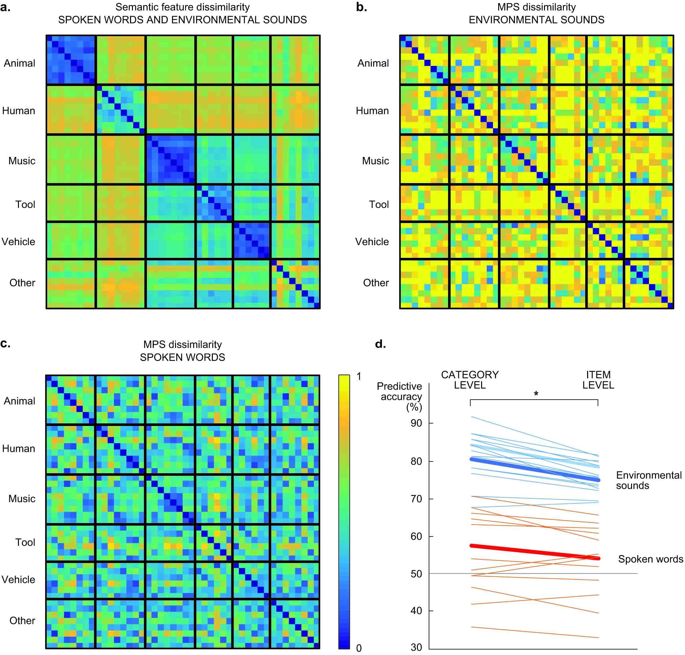
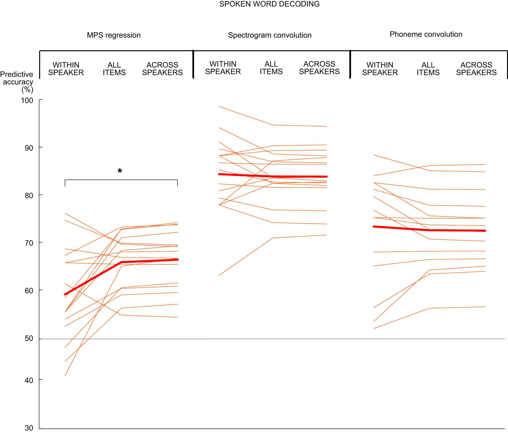
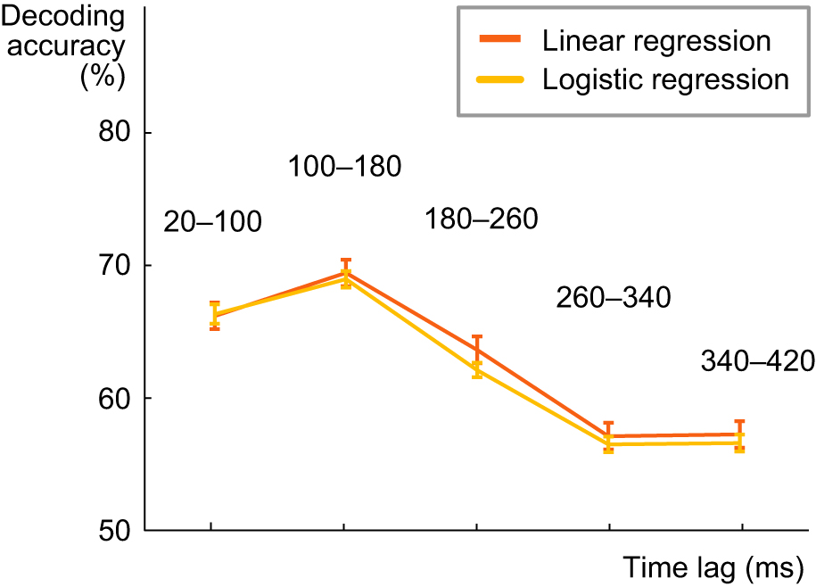

To investigate the possible differences in speech tracking in left and right temporal areas, we performed the decoding with lagged time windows separately for the sensors over left and right temporal areas. The results show similar tracking over short lags, with the best lag for both sides being 100-180 ms. However, for the left temporal regions this tracking of the acoustic content at each time point of the spoken word goes on longer than for the right hemisphere, as the decoding accuracy remains quite high also for lags of 260-340 and 340-420 ms. A statistically significant difference in decoding between the to hemispheres was obtained only at 260-340 ms lag (Z = 2.04, p = 0.04). We hypothesize that this longer tracking may reflect the memory maintenance and integration of the acoustic content over several phonemes/syllables, to be able to activate the correct word representations in memory.
Figure: Spectrogram decoding accuracy, calculated separately for the left and right temporal regions, at different lags between a time point in the stimulus and a time window in the MEG response (average across all 16 participants +/- SEM).
Successful decoding of the time-evolving spectrogram and phoneme content of spoken words at 100–180 ms lag in the convolution model engaged cortical areas around the bilateral primary auditory cortices, with contributions from superior temporal and inferior frontal areas. Similar areas were involved in decoding the MPS of environmental sounds (at 50–100 ms); 9 out of 20 most predictive areas for acoustic decoding were shared between the two sound groups. Semantic decoding of environmental sounds (at 650–700 ms) had strongest contributions from bilateral superior temporal areas, areas surrounding the bilateral central sulci, parietal cortex, as well as right frontal and insular areas. For spoken words, sources that contributed most to the decoding concentrated on areas surrounding occipito-temporal cortex, bilateral frontal cortex, left central sulcus and insular areas. Two out of 20 most predictive areas for semantic decoding were shared between the two sound groups.
Figure: Illustration of the top 20 ranking cortical areas (parcels) for the decoding of acoustic and semantic features for spoken words and for environmental sounds. The parcel names are listed in the table below. Sources for acoustic decoding of spoken words are based on the convolution model and spectrogram, with the best lag (100–180 ms). Sources for acoustic decoding of environmental sounds are based on the regression model and MPS, at 50–100 ms. For semantic decoding, the regression model at 650–700 ms was used for both classes of sounds.
Environmental sounds have more acoustic variation than spoken words, and typically more variation across categories than within categories, as sounds with a similar source (e.g. animal vocalizations vs. tool sounds) are more likely to share acoustic features such as frequency content and degree of harmonics or periodicity. This could be reflected in the MEG responses and, in theory, improve the semantic decoding of environmental sounds on category level. To investigate this possibility, we compared the dissimilarity matrices of the semantic features and acoustic features for both stimulus groups with a Mantel test. Some overlap was found in the category structures of acoustic and semantic features for environmental sounds (p = 0.004) but not for spoken words (p = 0.80). This is possibly reflected in the category-level decoding of semantic features that was significantly better than item-level decoding particularly for environmental sounds (Z = 3.4, p = 0.00015). However, the better performance for category-level than item-level decoding was not entirely due to acoustic within-category similarity and between-category differences (in environmental sounds), since this difference was also observed to some extent for spoken words (Z = 2.2, p = 0.025); thus it seems to be partly due to salient cortical representations of the semantic categories.
Figure: a) Dissimilarity (1-correlation) of semantic features, the same for both types of sounds, cluster into salient categories (except for the category ‘other’). b) Dissimilarity (1-correlation) of acoustic (MPS) features of environmental sounds. c) Dissimilarity (1-correlation) of acoustic (MPS) features of spoken words. d) Predicting the category (left) or identity (right) of environmental sounds and spoken words based on semantic features. Each thin line represents the decoding performance in one participant and the thick line the grand average over all 16 participants. The grey solid line denotes chance level performance (50%).
We tested whether acoustic characteristics of the 8 different speakers contributed to decoding performance for the spoken words. In within-speaker decoding the two test items are always chosen from the same speaker; in across-speaker-decoding the two test items are always chosen from different speakers. The frequency and modulation content characteristic of each speaker contributed significantly to the MPS-based decoding of spoken words: items spoken by the same speaker could not be distinguished at a very high accuracy (within-speaker decoding of spoken words 58%), whereas the model performed significantly better when only item pairs from different speakers were considered (across-speaker decoding 66%; within-speaker vs. across-speaker decoding: Z = 2.4, p = 0.016). In contrast, the spectrogram convolution model could equally well tell apart items spoken by the same or different speakers (within-speaker decoding 84%, across-speaker decoding 83%; Z = 0.62, p = 0.56). Thus, acoustic features other than the acoustic speaker characteristics play an important role in the decoding of spoken words with the convolution model.
Figure: Decoding results for spoken word acoustics with the MPS regression model (left), spectrogram convolution model (center), and the phoneme content of spoken words with the convolution model (right). Each thin line represents the decoding performance in one participant and the thick line the grand average over 16 participants. The grey solid line denotes chance level performance (50%).
The phoneme sequence was predicted based on the brain responses with the same linear regression model as spectrogram and amplitude envelope, which are continuous variables. However, each phoneme sequence is a categorical variable, which is why we wanted to investigate whether the use of a logistic model improves the decoding accuracy of phonemes. To do this, a linear classification model with a logistic regression learner was used. The model composes the objective function for minimization from the sum of the average loss function and the regularization term. The model uses Ridge as a regularization method. Minimization of the cross-validation error of the fit was done by varying the regularization strength parameter lambda. To determine a good penalty strength for the best possible fit, 5-fold cross-validation was implemented. The model was trained separately for each subject in the same way as in the case of the linear model. After training, the model was tested for unseen data, and the resulting accuracy over all cross-validation tests for different lag windows was averaged across all subjects. The best predictive accuracy for decoding phoneme sequence of spoken words was reached with a lag of 100–180 ms also in case of the logistic model. However, the logistic model does not appear to outperform the linear model for any lag window.
Figure: Decoding results for the phoneme content of spoken words with the linear and logistic regression, at different lags between a time point in the stimulus and a time window in the MEG response (average across all 16 participants +/- SEM).